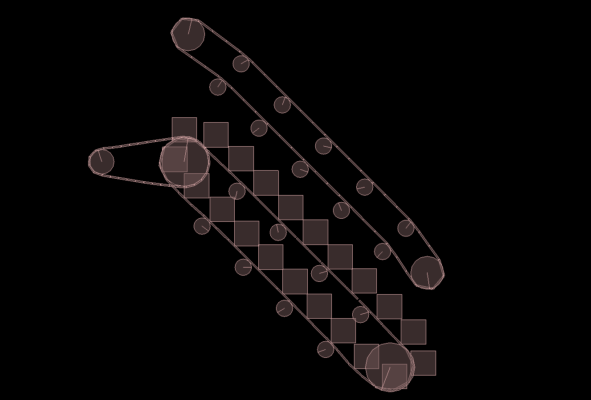

Over the course of CS 296 (Software Systems), in addition to our weekly assignments, we have been working on our course project - simulating an escalator in Box2D - using the tools we have been learning. In the very first week of this course, we planned out our project, and imagined what our end result would look like. Here is our original conception of the project.
Our project is now complete. A detailed project report is linked below. Meanwhile, here is what the final result looks like:
Here's a detailed project report, contrasting our original conception with the final result, and analysing the design of our simulation and its performance using timing and profiling tools
The links below have been most helpful throughout the completion of this project:
1. Design of Escalator
science.howstuffworks.com
2. Working of Escalator
vimeo.com
3. Box2d for Simulation
box2d.org
4. Creating Converyor Belt
Conveyor Belt Tutorial
5. Creating Revolute Joints
Revolute Joint Tutorial